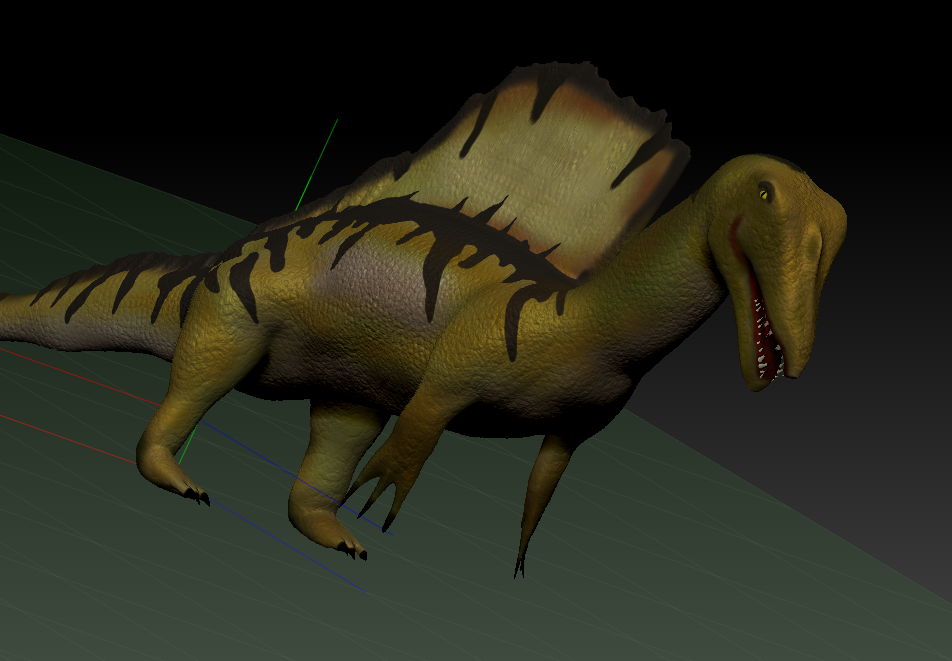
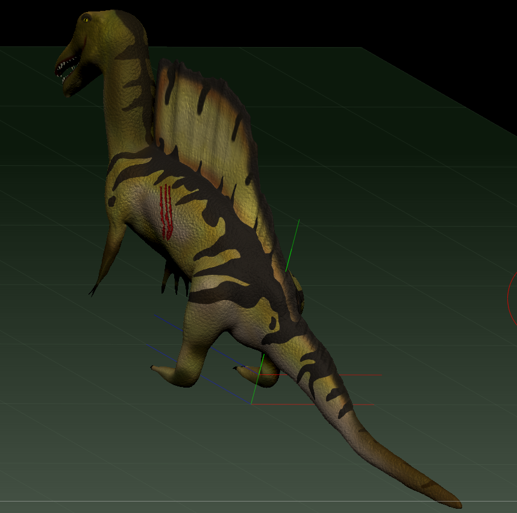

Project Pictures



In this project, the goal was to find references and model a prehistoric animal. I chose to model a Spinosaurus. The goal was to think about how the animal is shaped anatomically when modeling. Additionally, this project was made in ZBrush, teaching me a new software to sculpt in other than Mudbox. My biggest takeway from this project was learning how to layer colors to make something look natural.
Unfortanetly, the fbx/obj file of this project was corrupted. The original project was made in ZBrush, which I no longer have access to. Because of this, I cannot export my Spinosaurus to Maya to make a turntable... Although, I still have the screenshots of my model displayed here!